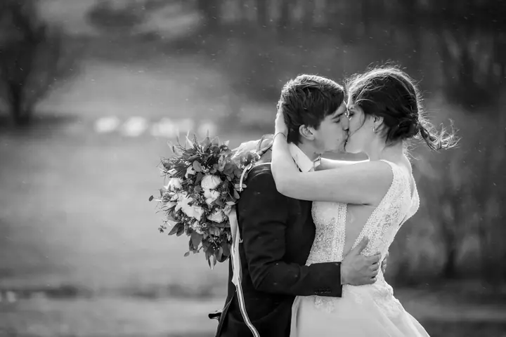
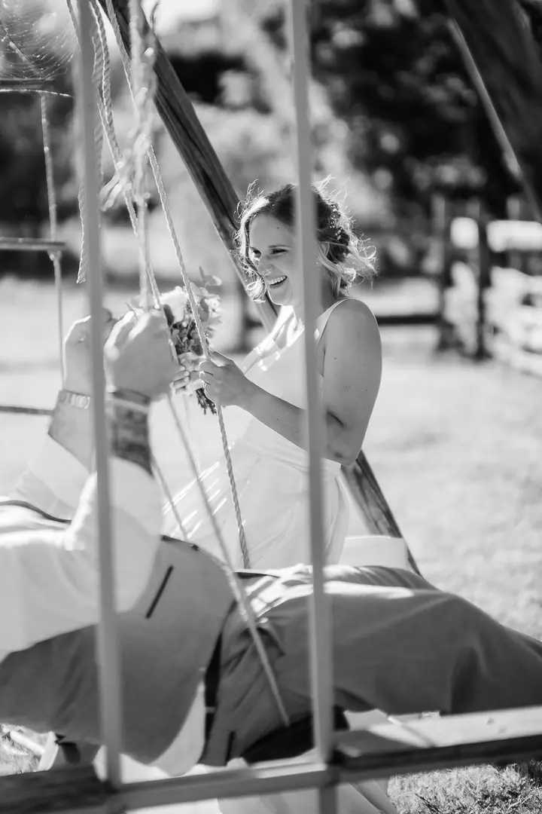
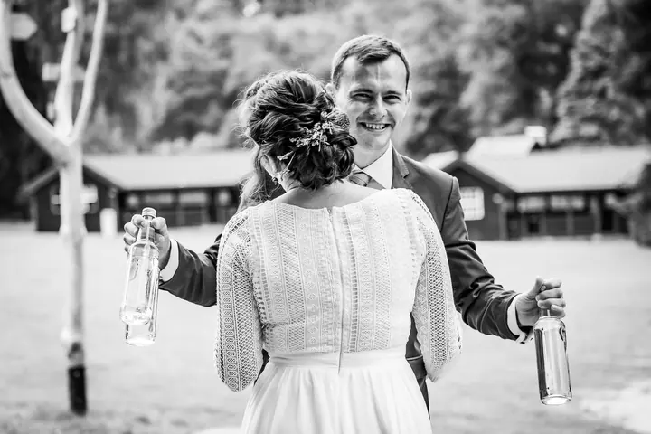
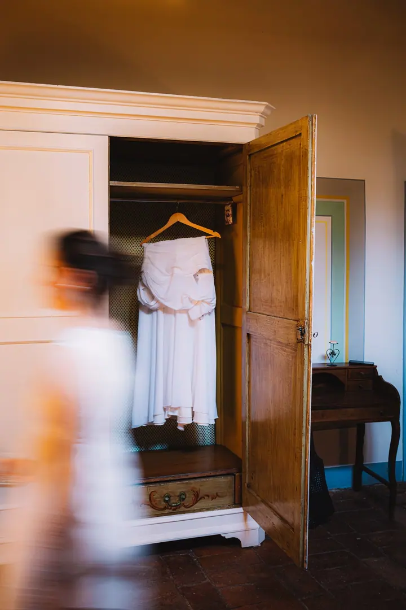

Svatební focení
Jsem s vámi po celý den, ve všech důležitých momentech, a zachycuji celou škálu emocí. To nejlepší podle vybraného balíčku pečlivě upravím do luxusní svatební fotoknihy.





Jmenuji se Petr Macek a fotím svatby v Teplicích a okolí. Spolu s Honzou jsme s vámi po celý den, od příprav až po večerní veselí, abyste si mohli svůj příběh převyprávět znovu a znovu.
Více o mně
„Nejcennější není to, co vlastníme, ale to, co prožijeme…“
— Petr Macek
Jsem s vámi po celý den, ve všech důležitých momentech, a zachycuji celou škálu emocí. To nejlepší podle vybraného balíčku pečlivě upravím do luxusní svatební fotoknihy.
Rodiče, děti, sourozenci. V dětech se zrcadlí bezstarostnost a spontánnost a tu se snažím přenést do fotek, na které se budete rádi dívat i po letech.
Maturitní plesy, firemní a kulturní akce. Každou fotku pečlivě vybírám a upravuji, abyste si mohli svůj plesový příběh převyprávět znovu.
Focení v ateliéru se dá domluvit po telefonu, e-mailem nebo přes kontaktní formulář. Řekněte mi svou představu a domluvíme se.
Fotografie jsou ilustrační
Věřím, že nejcennější není to, co vlastníme, ale to, co prožijeme. Proto se na svatbě nesnažím jen o hezké portréty. Chci zachytit celý den v jeho skutečné atmosféře, se všemi emocemi, které k němu patří.
Rád se stávám součástí vaší svatby. Fotil jsem Klárku, kterou znám od jejích pěti let, a také Verunku s Michalem, které jsme kdysi učili tančit v našich tanečních kurzech. Nejvíc mě baví svatby, kde se svatebčani opravdu baví, a vzpomínám i na chvíle, jako bylo požehnání rodičů v klášteře Želiv.
Fotím spolu s Honzou (Janem Mackem) a kromě svateb se věnujeme i rodinám a dětem, plesům, firemním akcím a focení v ateliéru. To nejlepší z vašeho dne pečlivě upravíme do luxusní fotoknihy, kterou budete rádi brát do ruky i po letech.

Pošlete mi poptávku. Stačí si rezervovat termín a vyplnit pár základních údajů, které potřebuji k rezervaci svatebního focení.
Probereme, jak bude váš den vypadat, co je pro vás důležité a jaký balíček vám bude sedět nejvíc.
Jsem s vámi celý den, ve všech důležitých chvílích. Zachycuji vaši svatbu tak, jak se opravdu odehrává.
Každou fotku pečlivě vyberu a upravím. Ve vybraném balíčku pak to nejlepší poskládám do luxusní svatební fotoknihy.
Pošlete mi poptávku přes formulář. Stačí vyplnit termín a základní údaje, ozvu se vám a domluvíme další kroky.
Fotím společně s Honzou (Janem Mackem). Kdo z nás vás bude fotit, si domluvíme podle vašeho termínu a přání.
Ano, podle zvoleného balíčku. To nejlepší z vašeho svatebního příběhu pečlivě upravím do luxusní svatební fotoknihy.
Focení rodin, dětí, plesů nebo akcí se dá domluvit po telefonu, e-mailem nebo přes kontaktní formulář. Ceník najdete na webu.